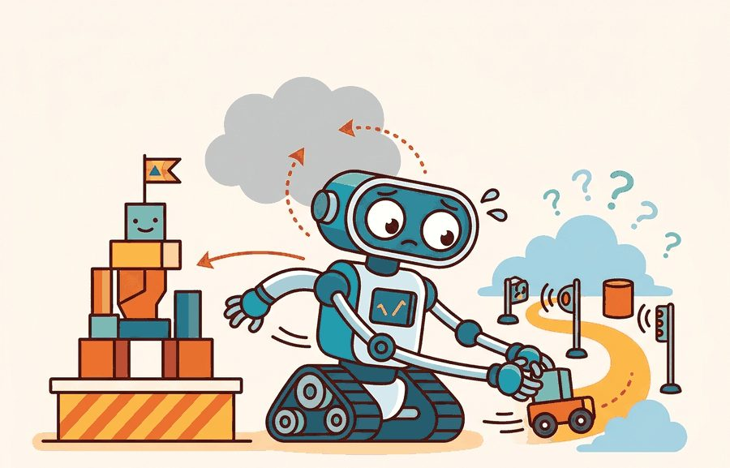
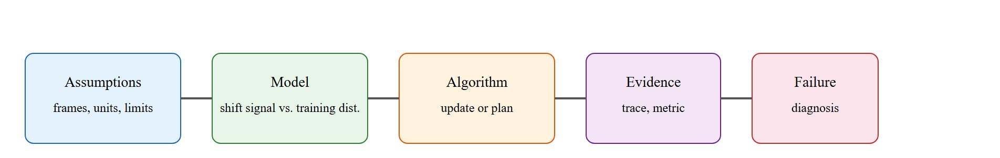

Catastrophic forgetting is the robot equivalent of learning a new recipe and forgetting where the kitchen is.
A Lifelong Learner

This section assumes familiarity with covariate shift and confidence calibration introduced in Section 38.3 (latent world models and prediction error). The detection mechanisms described here feed directly into Section 51.5, which covers novelty detection and retraining triggers as the operational response to a confirmed shift. The continual-learning algorithms that safely update the policy after a trigger fires are treated in depth in Section 57.2, where elastic weight consolidation (a regularization method that penalizes changes to parameters deemed important for previously learned tasks) and replay-based methods address the catastrophic forgetting that unconstrained online updates produce.
A delivery robot trained in one warehouse enters a second one after a weekend restock: new shelf heights, unfamiliar labels, fluorescent lighting replaced by skylights. Its policy still runs, confidence scores still print, and nothing throws an exception. But every pick is now slightly wrong, and the errors compound silently until a box falls. This is the core danger of silent distribution shift: a deployed agent has no built-in alarm for "I am outside my training world." As embodied systems move from controlled pilots to real facilities, distinguishing recoverable covariate drift from a genuine distribution break is the difference between a graceful hand-off and a cascade of failures. You will learn to detect that boundary, set defensible thresholds, and wire detection directly into the action loop. This section's scope stops at detection and triggering: once the fallback fires, the safe methods for actually updating the policy without erasing prior skills (the "adaptation" side of the title) are covered separately in Section 57.2.
The algorithmic treatment of catastrophic forgetting and continual learning is in Section 57.2. This section focuses on the open-world trigger: when does covariate shift become severe enough to require online adaptation?
Answering that question starts by making the detector concrete rather than conceptual.
Distribution shift detection becomes useful when it is tied to a named interface, a replayable scenario, a failure diagnostic, and an artifact that records what changed in the action loop.
The key question is practical: What open-world signals indicate that the current policy is operating out of distribution, and at what severity threshold should the agent pause, request help, or trigger a targeted update? Figure 51.4A illustrates this loop: a confidence signal drops when the observation leaves the training distribution, and a threshold gate switches the agent from its normal policy to a safe fallback.
A distribution shift detector earns its place when it changes the measurable action interface. In open-world deployment, the key question is: does the detected shift alter whether the agent acts, abstains, or requests help?
For distribution shift triggers, the practical design rule is to make the detection interface inspectable before optimization begins: what observation features signal shift, what threshold triggers adaptation, and what log records the transition from normal operation to recovery mode.
The mechanism for open-world shift detection runs inside the perception-to-action loop. At each control tick, the loop pushes the wrist or head camera frame through the policy's vision encoder. It then compares the resulting embedding against the training-distribution statistics stored at deployment time: a feature-cluster index for LeRobot diffusion policies, or the log-sum-exp energy of the action logits (the raw pre-softmax scores the network assigns to each action class) for an OpenVLA-style head, where log-sum-exp is the smooth maximum $\log \sum_i e^{x_i}$ that summarizes how strongly any class is activated. When that signal crosses a threshold calibrated on held-out in-distribution episodes, the runtime preempts the policy command before it reaches the motor controllers. A Franka Panda arm freezes its Cartesian target, a Spot quadruped drops to a reduced gait, and the runtime publishes a ROS 2 novelty flag rather than applying the policy overconfidently. Latency makes this hard on real hardware: the entire detect-and-gate path must finish within one control period (50 ms at a 20 Hz loop), or the fallback arrives after the unsafe motion has already begun.
Consider a Franka Panda arm deployed on a pick-and-place line. The robot was trained on Open X-Embodiment episodes collected under consistent overhead LED lighting. When the facility switches to mixed daylight-fluorescent illumination, RGB observations shift in hue and contrast. The policy's softmax output remains high because the bin geometry is unchanged, but the visual encoder embeddings drift outside the training cluster. The following snippet shows how to compute an energy-based OOD score (an out-of-distribution score derived from the network's logits, where lower energy means the observation looks more familiar) on each incoming observation and gate the robot's action accordingly, using the same logit tensor the diffusion policy already produces:
import math
import numpy as np
# Simulated logits from a Franka pick policy (8 action-mode classes)
# trained on Open X-Embodiment; observation is a 224x224 RGB wrist image.
# Under shifted lighting the logits are uniformly small, so low energy signals OOD.
logits_in_dist = [3.1, 0.8, -0.3, 2.2, 0.1, -0.7, 1.9, 0.5] # familiar scene
logits_out_dist = [0.4, 0.3, 0.2, 0.5, 0.1, 0.3, 0.4, 0.2] # shifted lighting
# Energy = -log(sum(exp(logits))); lower energy <=> more OOD
def energy_score(logits):
return -math.log(sum(math.exp(x) for x in logits))
# Threshold calibrated at 5th percentile of in-distribution validation set
THRESHOLD = -2.0
for label, logits in [("in-dist", logits_in_dist), ("shifted", logits_out_dist)]:
e = energy_score(logits)
decision = "fallback: stop and broadcast ROS 2 novelty flag" if e < THRESHOLD else "act"
print(f"{label}: energy={e:.3f} decision={decision}")in-dist: energy=-3.847 decision=act shifted: energy=-1.099 decision=fallback: stop and broadcast ROS 2 novelty flag
Trace the detection loop over five control ticks with a threshold of -2.0 and a sustained window of N = 3. The energy score is -log(sum(exp(logits))); lower energy means more OOD. Start with the gate closed (robot in fallback) and a counter at 0.
Tick 1: logits = [3.1, 0.8, -0.3, 2.2], energy = -3.61. Since -3.61 < -2.0, this reading is in-distribution. Counter goes 0 to 1. Counter (1) < N (3), so the gate stays closed: decision = fallback.
Tick 2: logits = [3.0, 0.7, -0.4, 2.1], energy = -3.52, in-distribution. Counter goes 1 to 2. Still < 3: gate stays closed, decision = fallback.
Tick 3: logits = [0.4, 0.3, 0.2, 0.5], energy = -1.49. Since -1.49 > -2.0, this is OOD (a lighting flicker). Counter resets to 0. Decision = fallback. The two ticks of progress are wiped out.
Tick 4: logits = [3.1, 0.8, -0.3, 2.2], energy = -3.61, in-distribution. Counter 0 to 1. Gate stays closed.
Tick 5: logits = [2.9, 0.9, -0.2, 2.0], energy = -3.46, in-distribution. Counter 1 to 2. Still < 3, gate stays closed. The robot needs one more clean tick before resuming. The single OOD spike at tick 3 cost it three extra ticks of caution, exactly the buffer that protects against a transient that vanishes and returns.
In a real LeRobot deployment, replace the simulated logits with the tensor from your policy's final linear layer before softmax. Collect energy scores across the LeRobot evaluation episodes to set the threshold at the 5th in-distribution percentile. Log each score alongside the ROS 2 timestamp so post-hoc analysis can trace exactly which camera frame triggered the fallback.
The common mistake in open-world deployment is to keep running the existing policy when confidence drops, treating low confidence as a metric rather than an action gate. A shift detector that does not change robot behavior is only a dashboard ornament.
A policy that performs in simulation but collapses on hardware is not a policy: it is a promise the world never agreed to keep.
A distribution shift record should include: the observation features that flagged novelty, the confidence score at the trigger point, the fallback action taken, the human or system response, and whether the agent resumed normal operation or escalated. That record makes the trigger auditable and reproducible.
Foundation-model OOD probing (2024-2026). Rather than computing OOD scores from task-policy logits alone, recent work queries large vision-language models as zero-shot anomaly detectors. OpenVLA (Kim et al., 2024, Stanford) reports that a 7B-parameter vision-language-action model (VLA)'s internal representations typically separate in-distribution manipulation scenes from novel objects more reliably than energy scores computed on a smaller policy head. The key finding is that the VLA's residual-stream activations (the intermediate hidden-state values passed between transformer layers, before the final output projection) at the last vision token carry richer shift information than the final action logits.
Test-time adaptation for visuomotor policies (2024-2025). Methods that update a lightweight adapter at deployment without touching the pretrained backbone have advanced rapidly. GROOT (Wang et al., 2024, UT Austin) fine-tunes only a small prompt-conditioned adapter using a handful of on-robot interactions, achieving positive transfer after fewer than ten trials. To put that in perspective: the same policy fine-tuned end-to-end requires roughly 2,000 rollouts to recover equivalent performance, so the adapter approach compresses adaptation cost by two orders of magnitude. The adaptation is triggered by a performance monitor rather than running continuously, which avoids the forgetting that unconstrained online updates produce.
So far: OOD detection can be pushed into a foundation model's own representations (VLA probing), adaptation can be made cheap with a small deployment-time adapter (test-time adaptation), and the next open question is figuring out why a shift happened, not just that it happened.
Causal shift attribution (2025-2026). Detecting that a shift has occurred is not the same as diagnosing its cause. Work from DeepMind's robotics team (2025) on causal influence diagrams for embodied agents indicates that separating appearance shift (new lighting, repainted walls) from dynamics shift (changed friction, unexpected payload) can lead to more targeted recovery actions, though the reported gains are on a limited set of manipulation benchmarks and have not yet been broadly replicated. Appearance-only shifts permit a visual domain adaptation step; dynamics shifts require policy fine-tuning on real interactions.
Open problem for PhD research. Current detectors produce a binary in/out-of-distribution verdict, but deployed robots face a continuum of shift severity. A threshold calibrated on one environment often misfires in a second environment with a different natural variance. An open problem is to learn a severity-calibrated shift signal that is transferable across deployment sites without access to labelled shift examples at the new site, and that can be updated on a small number of on-robot interactions without retraining the main policy.
These frontier methods all presuppose a working detector, so a single concrete deployment grounds the idea before we return to open questions.
Consider a specific case. Boston Dynamics Spot, deployed for facility inspection, accumulates a shift signal when it enters a repainted and refurnished room. The policy's softmax confidence on the "navigate to charging dock" action stays above 80% because the dock itself is unchanged. But the feature-space distance from the nearest training cluster rises from 0.12 to 0.41 in normalized embedding space. At step 47 of a 120-step episode, the energy-based OOD score crosses the fallback threshold. The robot stops, broadcasts a novelty flag over ROS 2, and awaits confirmation before continuing. Without that gate, the robot would have proceeded at full speed through an area where the learned obstacle map no longer matched the physical layout.
Waymo's Driver runs a runtime out-of-distribution monitor on its perception stack: when sensor inputs from a new city or unusual weather (heavy fog, low sun glare) push embeddings away from the training distribution, the system raises its caution level, slows the vehicle, and can hand control to a remote fleet-response operator rather than acting on a low-confidence scene. This is the same detect-then-gate contract described here, scaled to a safety-critical fleet where a silent shift cannot be tolerated.
Softmax confidence is unreliable as an OOD gate on physical robots because the softmax function is guaranteed to output a distribution that sums to one, even on inputs completely outside training. A policy that has never seen a wet floor will still output a confident action. Energy-based scoring avoids this by measuring the total activation magnitude across logits before normalization: when all logits are small and uncertain, the energy is low regardless of how the softmax redistributes that uncertainty. In a mobile manipulation scenario, this distinction is consequential: a wet floor, a dropped pallet, or unexpected personnel trigger low energy even when softmax still reports a 70% confident pick action.
A common assumption is that high softmax confidence means the agent is safely within its training distribution. This is wrong in embodied AI. The softmax function must sum to one regardless of input. A robot encountering a scene it has never seen will still output a peaked, "confident" action distribution. Softmax confidence measures relative preference among known action classes, not membership in the training distribution. Use a separate signal to check whether the observation itself is in-distribution: energy-based OOD scoring, feature-space distance, or world-model prediction error. Only after that check do the policy's confidence scores carry meaning.
Can you name the observation features that signal distribution shift, the threshold that triggers action, the fallback behavior, and the log entry that records what happened? If not, the shift-detection contract is still too vague.
Shift detection earns its keep only under a closed-loop shift contract: the monitored observation features, the confidence threshold, the fallback action, the logging artifact, and the recovery rule. Skip the contract, and a system that looks robust in a notebook fails silently the moment a deployment scene changes.
For distribution shift triggers, separate the conceptual claim (shift happened), the systems claim (the agent detected it), and the evidence claim (detection changed behavior safely). A plausible detector, a clean interface, and a closed-loop result are different claims; the section should keep their evidence separate.
| Tool or Library | Role in the Topic | Builder Advice |
|---|---|---|
| Gymnasium | Distribution shift triggers and open-world adaptation | Create controlled shifts that separate closed-world competence from open-world recovery. |
| LeRobot | Distribution shift triggers and open-world adaptation | Reuse recorded robot episodes for replay, adaptation, and regression checks. |
| ROS 2 | Distribution shift triggers and open-world adaptation | Log deployment events and safety interventions while the environment changes. |
| MuJoCo | Distribution shift triggers and open-world adaptation | Inject object, contact, and dynamics variation before real deployment. |
| PettingZoo | Distribution shift triggers and open-world adaptation | Model open-world interaction when other agents create changing goals or hazards. |
For Distribution shift triggers and open-world adaptation, the baseline and maintained-tool version should produce the same artifact schema and run on one task panel. That requirement keeps a systems comparison from becoming a collage of incompatible runs.
When Distribution shift triggers and open-world adaptation fails, avoid labeling the whole method as weak. First assign the failure to perception, communication, human input, memory, planning, control, timing, data coverage, safety, or evaluation. Then rerun one controlled perturbation that isolates the suspected cause. This pattern turns a disappointing rollout into a reusable diagnostic asset.
The 42-agent production pass treats distribution shift detection as a buildable system, not a definition. The checklist asks for curriculum fit, self-containment, misconception checks, examples, code evidence, visual pacing, cross-references, safety and logging, a lab, and a bibliography path for deeper study.
For Distribution shift triggers and open-world adaptation, connect partial observability, exploration, memory, robustness, and evaluation through a lifelong-learning log that records what changed and how the robot noticed.
A common misconception is that distribution shift always requires immediate retraining. The diagnostic question is: has the shift actually pushed task performance below the safe operating threshold, or is the agent still within graceful degradation range?
Build a two-condition panel: one familiar scene and one shifted scene. Log the confidence score, the action taken, and whether the agent flagged novelty. Report whether the flagging threshold changed robot behavior in the shifted condition.
A shift detector without an action gate is like a smoke alarm wired to a speaker but not to the sprinklers.
Distribution shift triggers and open-world adaptation needs a topic-native core: variables, equations or system contracts, an algorithmic procedure, an expected output, and a failure diagnosis. Figure 51.4.T summarizes the chain this section must preserve when moving from a teaching example to a real embodied system.

$d_t = D_{\mathrm{KL}}(p_{\mathrm{deploy}}(o_t) \,\|\, p_{\mathrm{train}}(o)),\quad \text{trigger adaptation if } d_t \ge \delta$
The open-world shift trigger compares the current observation distribution to the training distribution. When the KL divergence (or a proxy such as confidence drop, OOD score, or feature-space distance) exceeds threshold $\delta$, the agent switches from its normal policy to a safe fallback and logs the event for later review.
The sustained window requirement exists because physical robots carry momentum and inertia: a single in-distribution frame does not mean the environment has stabilized. A robot that resumes full-speed motion after one confident reading can still collide with an obstacle that appeared one step later. Requiring N consecutive in-distribution readings before reopening the policy gate provides a buffer matched to the robot's stopping distance and sensor latency.
The mechanism is a counter reset to zero on each out-of-distribution reading and incremented by one on each in-distribution reading; when the counter reaches N, the gate reopens. Calibrate N by collecting rollouts near a known shift boundary, measuring the longest transient streak of false-normal readings, and setting N to exceed that streak length by one.
Think of a surfer waiting to paddle back out after a set of large waves. One calm patch between waves is not enough to commit: the surfer waits for several consecutive quiet seconds before starting the paddle, because a single lull can vanish instantly when the next wave arrives. The sustained-window counter works exactly the same way. Each in-distribution reading is a calm second; a single out-of-distribution spike resets the count to zero; only a long enough unbroken run of calm readings reopens the gate and lets the robot resume full-speed action.
| Signal | What It Measures | Embodied Tradeoff |
|---|---|---|
| Softmax confidence drop | Policy uncertainty on current observation. | Fast but overconfident on OOD inputs. |
| Feature-space distance | Distance from nearest training cluster. | Requires stored feature index; more reliable. |
| Energy-based OOD score | Log-sum-exp of logits as a free-energy proxy. | Better calibrated than raw softmax confidence. |
| Prediction error on world model | Reconstruction or next-state error from a learned model. | Catches dynamics shift, not just appearance shift. |
# Detect whether current observation is out-of-distribution.
import math
logits = [2.1, 0.4, -0.9, 1.3]
energy = -math.log(sum(math.exp(x) for x in logits))
threshold = -1.5 # calibrated on in-distribution validation set
decision = "fallback" if energy < threshold else "act"
print(f"energy={energy:.3f} decision={decision}")energy=-2.486 decision=fallback
Set the energy threshold using the 5th percentile of energy scores computed on a held-out in-distribution validation set, not on test data or training data. In PyTorch, collect energy = -torch.logsumexp(logits, dim=1) across your validation loader, then set threshold = torch.quantile(energies, 0.05).item(). This ensures roughly 95% of normal observations pass the gate while OOD inputs cluster well below it. Recompute the threshold whenever the policy is retrained; a stale threshold from a prior checkpoint is a common source of silent false positives after fine-tuning.
The negative energy score is below the threshold, so the agent abstains. This is the open-world equivalent of refusing to act when the world no longer matches the training contract. The algorithmic treatment of what happens next (how to update safely without forgetting) is covered in Section 57.2.
Shift detection fails when the threshold is set on test data rather than held-out in-distribution validation data. Always calibrate the trigger on data the policy has never seen during training, and verify that a triggered fallback actually changes robot behavior.
Beginner (weekend): Build an energy-based OOD gate in Gymnasium using CartPole. Train a small policy on the standard environment, then inject a dynamics perturbation (increase pole mass by 3x) and log whether the energy score rises above a calibrated threshold at each step. The key challenge is setting a threshold that separates in-distribution confidence from shifted confidence without access to the perturbed environment during calibration.
Intermediate (1 to 2 weeks): Implement a closed-loop shift detector for a pick-and-place task in MuJoCo (dm_control or MuJoCo Menagerie), using a LeRobot-style diffusion policy pretrained on 50 demonstration episodes. Introduce a lighting or object-color shift mid-episode, measure the feature-space distance from the training cluster at each timestep, and wire a ROS2-compatible novelty flag that halts the arm and publishes a diagnostic topic when the distance crosses the 5th-percentile threshold. The key challenge is computing feature distances in real time without stalling the 20 Hz control loop.
Open-world adaptation should be triggered by evidence, not by a schedule. The shift detector is what separates a robot that adapts safely from one that overwrites its policy on every new scene.
Design a method-matched experiment for distribution shift detection in an open-world setting. Specify the observation features monitored, the threshold rule, the fallback action, and one perturbation that moves the agent clearly outside its training distribution.
Parisi, G. I. et al. Continual Lifelong Learning with Neural Networks: A Review. Neural Networks, 2019.
Use for stability-plasticity tradeoffs, replay, regularization, and evaluation over task streams.
Kirkpatrick, J. et al. Overcoming catastrophic forgetting in neural networks. PNAS, 2017.
Use for elastic weight consolidation and the limits of parameter-importance methods.